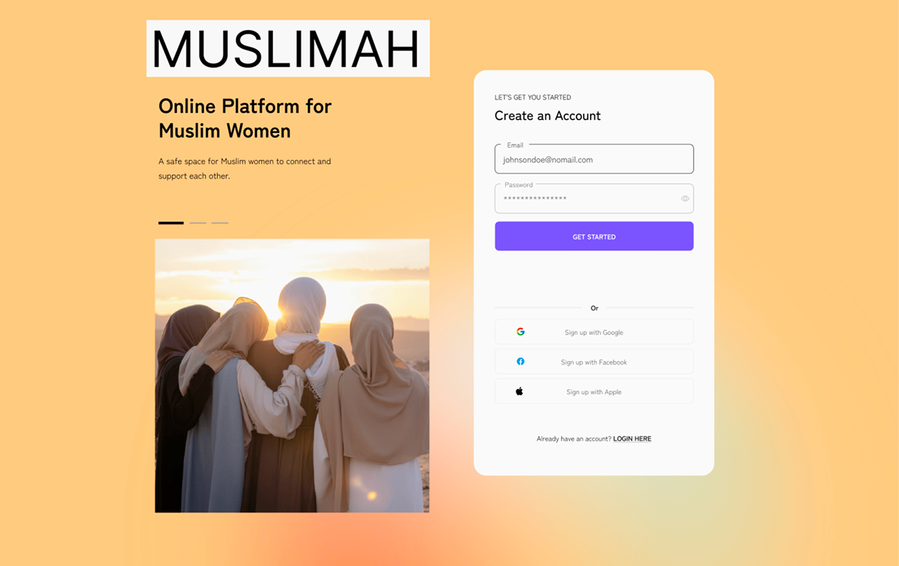
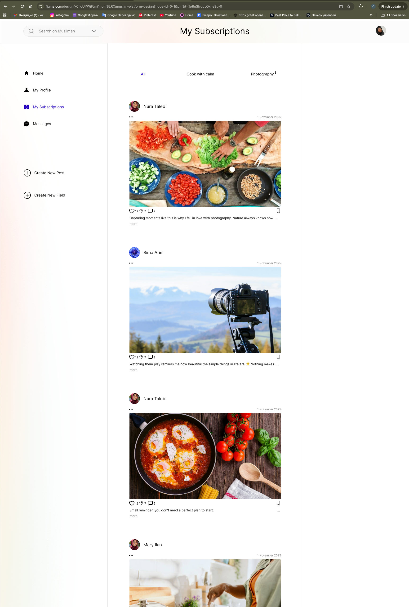
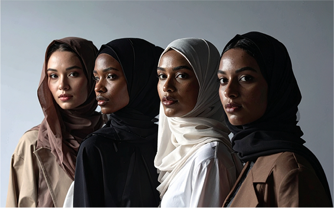
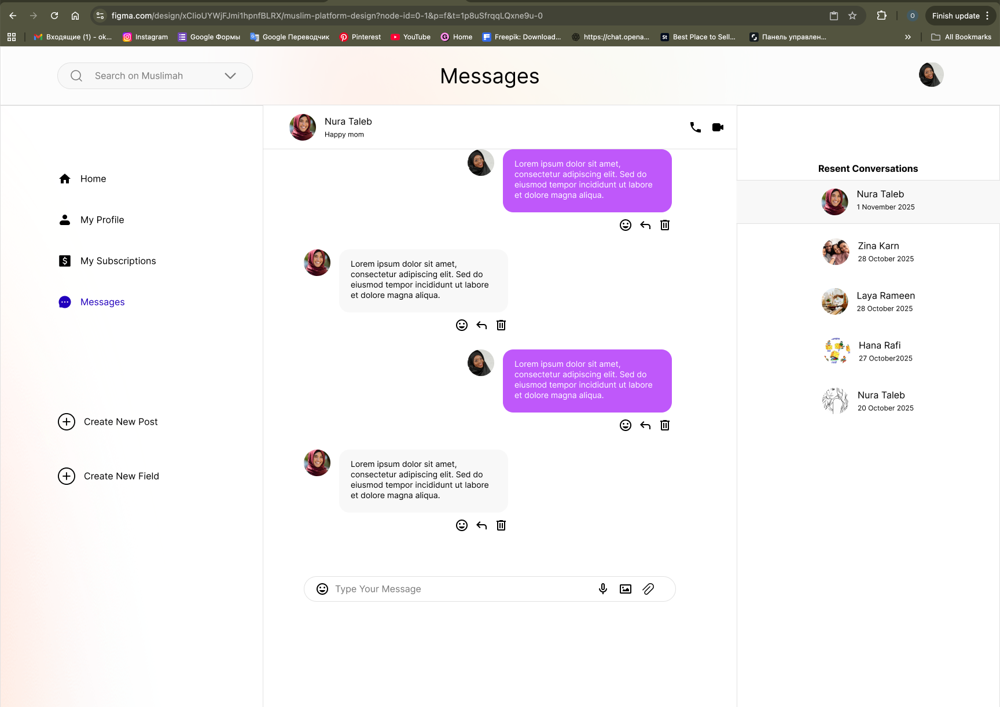
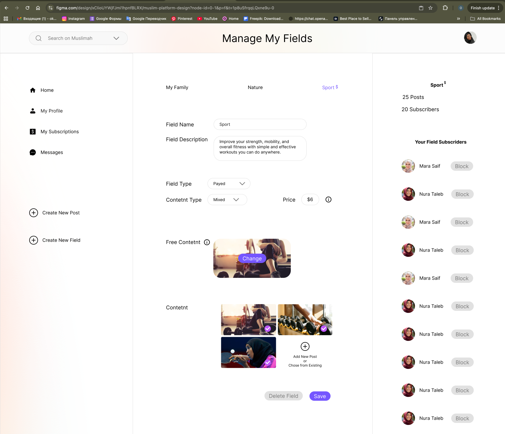

1
Problem Definition
Defined the problem, goals, and project scope.

This project focused on creating a reusable and scalable design system for e-commerce interfaces across desktop and mobile. The goal was to improve consistency, speed up the design process, and support more efficient product development.
The system included foundations such as colour, typography, spacing, and effects, as well as reusable UI components and interactive states. Accessibility and usability were considered throughout the process.
During this project, I explored how a structured system can support design quality, faster iteration, and clearer handoff for future development.

This project followed a full UX design process, from problem definition and research to prototyping, testing, and design iterations.
Defined the problem, goals, and project scope.
Conducted research to understand user needs.
Developed personas and empathy maps.
Analysed existing platforms and patterns.
Generated ideas and defined key features.
Defined how users move through the product.
Created low-fidelity layouts and structures.
Defined colours, typography, components, and styles.
Built reusable UI components and states.
Created an interactive prototype in Figma.
Checked contrast, focus states, and usability.
Tested the prototype and collected feedback.
Improved the design based on testing and feedback.
Each stage helped shape the product structure, user experience, and interface design. The process was iterative, and several design decisions were improved based on testing and feedback.
Many Muslim women cannot fully use existing social platforms due to privacy, religious, and cultural reasons. There is a need for a women-only platform where users can communicate, share content, and sell services safely.


I designed a social platform with gender verification at registration that allows Muslim women to communicate, share content, run blogs, and sell services in a safe women-only environment.

This academic project was completed as part of my UX design studies and demonstrates my approach to the full user-centred design process, from research and problem definition to prototyping and testing.